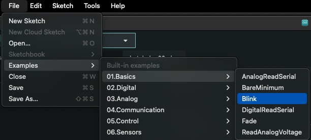
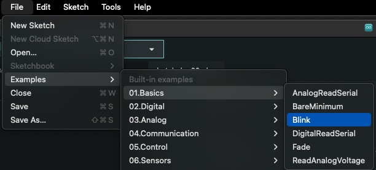
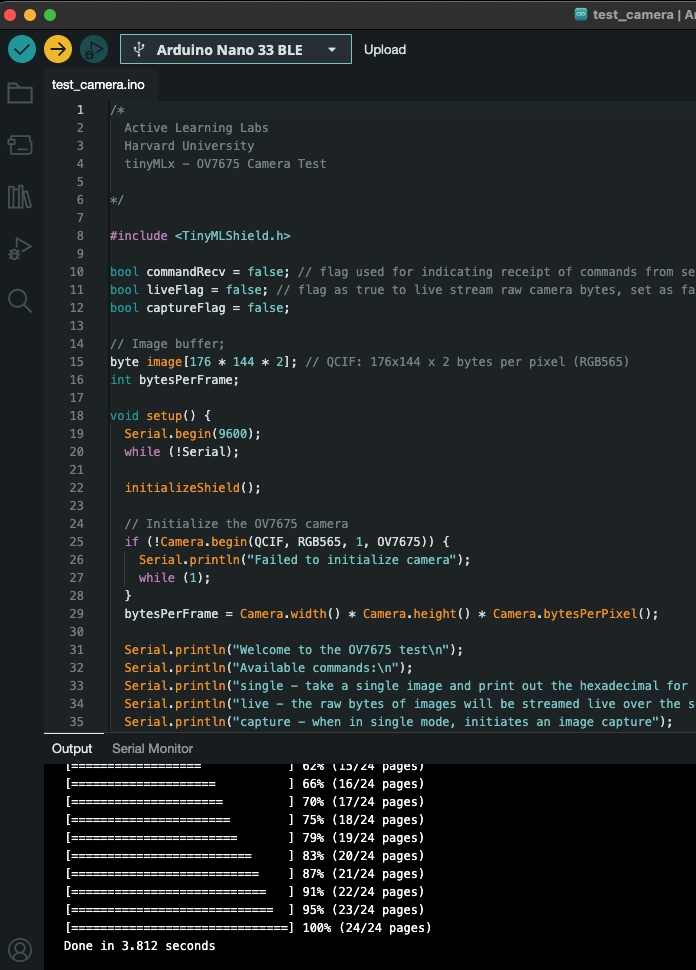
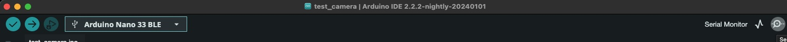
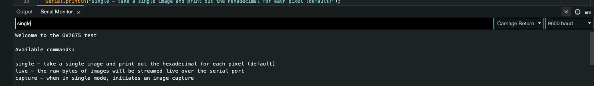
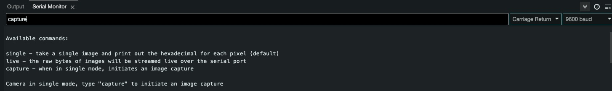
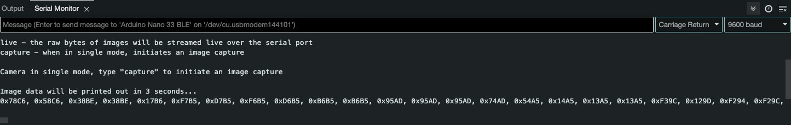
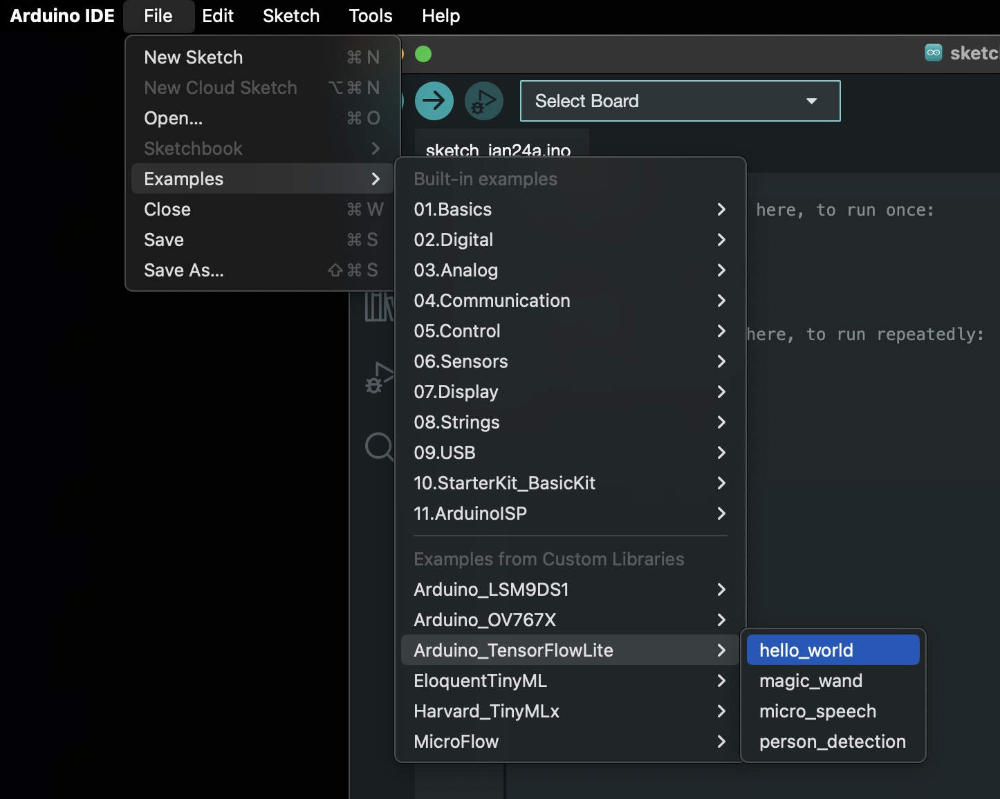
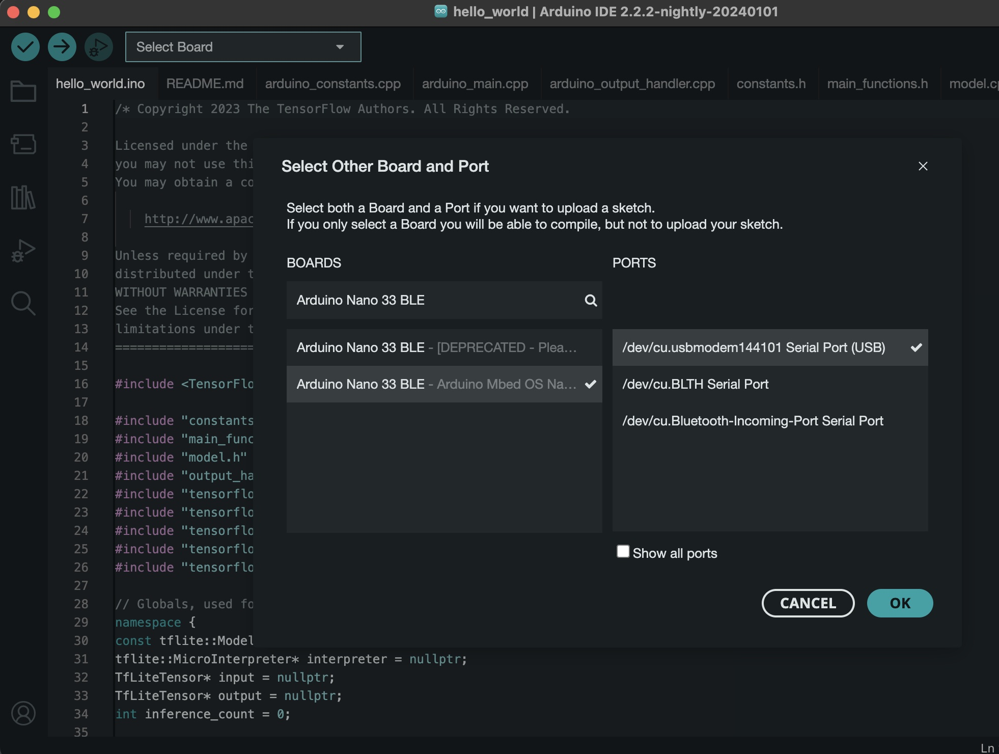
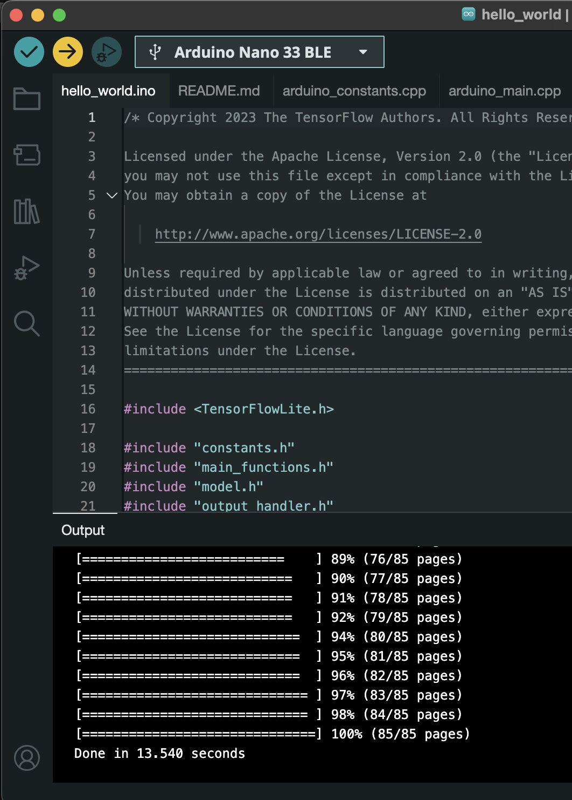

Upon selecting 'Blink' sketch, ensure board and port are selected

 Upload
Upload  Check for the blinking orange LED
Check for the blinking orange LED Arduino Tiny Machine learning kit consists of :-
Download and Arduino IDE
Install libraries
Select File > Examples > Basic > Blink

Upon selecting 'Blink' sketch, ensure board and port are selected
Upload
Check for the blinking orange LED
Select File > Examples > Harvard_TinyMLx > test_camera

Upload the sketch to the board
select serial monitor

To capture a single photo, type 'single' in the input prompt. Ensure the monitor is to send 'Carriage Return'

A message 'Camera in single mode, type "capture" to initiate an image capture' is displayed on the monitor
Now, type 'capture'

Ensure, to point the camera properly. This will take few trials and errors.
A message reading 'Image data will be printed out in 3 seconds...' will be displayed on the monitor
Captured image will be displayed as a list of hexadecimal values.

Pre-requisite : Arduino_TensorFlowLite library has been manually downloaded and placed in Arduino/libraries folder.
Select File > Examples > Arduino_TensorFlowLite > helloworld

If the board is not connected, reselect board and port

Upload the sketch to the board

Check for the orange LED to slow blink